Amonya - Ammo Loving Trader & Quester
- Downloads
- 9,653
- Favourites
- 33
- Mod lists
- 69
An alternative way to unlock all ammo in the game
Amonya is providing you with per-caliber questlines with increasing difficulty.
Kill enemies, give her a few thousand roubles, a couple of junk or different items - to unlock new ammo in her inventory.
This ammo is at the cheapest possible price.
The last quest is very grindy, but you can get massive amount of exp doing it… and a new pro+ variant bullet? What?
Bullet variants
Following my Definitive Weapon Variants, Amonya now offers her own ammo variants, unlocked through her questlines in addition to the vanilla bullets!
With one small change: an ammo variant type can be limited to use only with certain weapon categories.
This change allows for a much bigger freedom in balancing, than the vanilla bullets, as they can be added only to bolt-action rifles, or only to pistols and SMGs, etc.
This created a few very good, but require skill to use, bullets. Just don’t give them to scavs!
Whenever you want to use free ammo: Ratshot bullet variant is here! For only 1 rouble, you can shoot shotgun pellet with non-shotgun caliber weapons!
For early game the best bullet is Close Quarters bullet variant. Lacking in bullet speed, it has very good penetration and damage!
When you need very low recoil: Full-auto bullet variant is just for you! It’s cheap and is massively lowering recoil at the cost of damage.
… and these are only 3 out of 27 different bullet variant types available!
Features
- 157 new quests across 8 difficulty tiers, unlocking all vanilla bullets
- 158 new bullet variants across 27 variant types, unlockable through the quests above
- “Mag of Holding” - a magazine designed for storing massive amounts of ammo
It cannot be used in weapons, but can be placed in special slots
3 tiers available
Can be obtained by exchanging special bullets earned through quests - Native compatibility with mods:
Definitive Weapon Variants - adds 5 quests and 4 bullet variants
WTT-Content Backport - adds 7 quests and 6 bullet variants
WTT-Armory - adds 26 quests and 14 bullet variants
SaintDeerWeapons - adds 4 quests and 3 bullet variants
Danger Blicky - adds 3 quests and 2 bullet variants
ColorConverterAPI - bullet variants gain colored backgrounds and tracers - Compatible with almost all modded weapons
(modded calibers can also be integrated, but require additional configuration) - Available languages: English, Polish, Korean and Russian
Who is Amonya?
Once just a plain pony in her own world, one small error led her to the unforgiving Tarkov region.
Despite, at first, scared for her life at every step, she now has her own hobby - collecting ammunition, and her own goal - getting rid of enemies that threatened her at the start of her Tarkov journey…
Why (is Amonya)?
Are you tired of quests like “go there, do this”?
Amonya quests can be completed on any map while you play normally and complete standard Tarkov quests.
Are you tired of never having enough ammo?
You can unlock the ammo you need by completing quests in the caliber quest trees.
These quests reward you with the ability to buy large amounts of good bullets at a fair price.
If you still prefer collecting ammo from enemies, you can use Mag of Holdings to store large amounts of ammo in a single item
Why Amonya is a pony?
I needed a large number of background images, and new AI tools finally allowed me to create my own OC (Original Character) after many years.
So why not give her a purpose and some personality?
Feel free to laugh at me - but also feel free to suggest ideas for quest background images!
Trader avatar + description
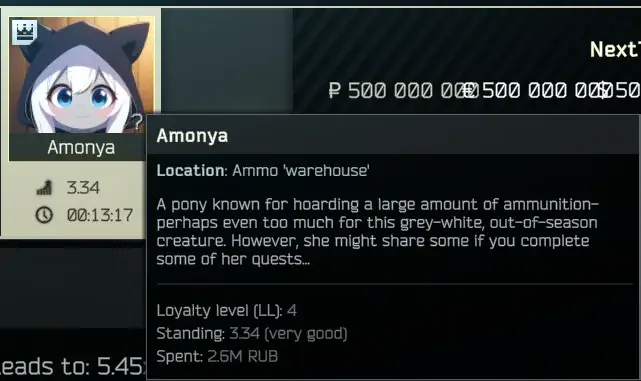
Introductory quest
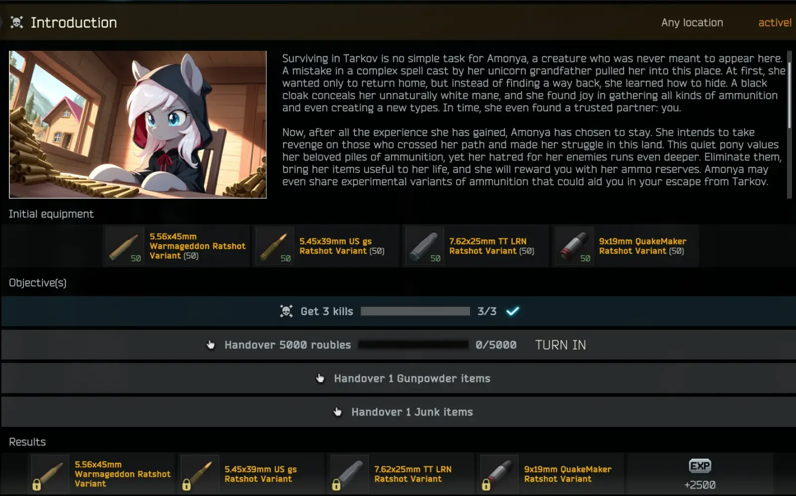
Mag of Holding - the smallest one out of 3
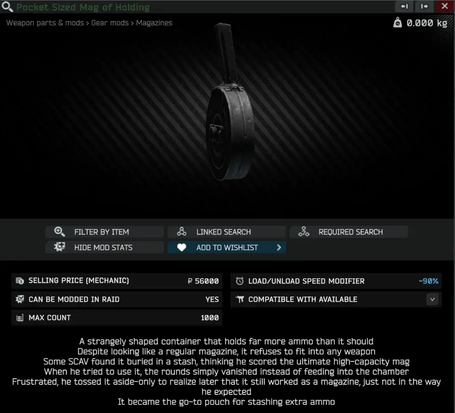
Each bullet has their own color, used in name, description, background and… tracer!
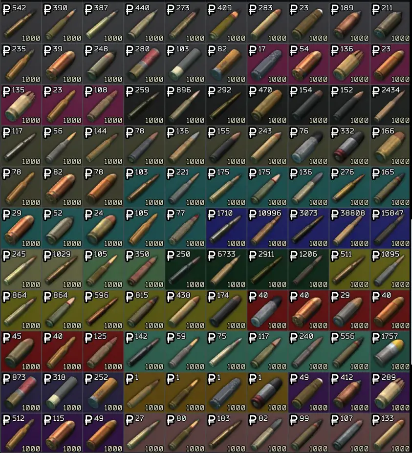
5.56x45mm Close Quarters bullet variant
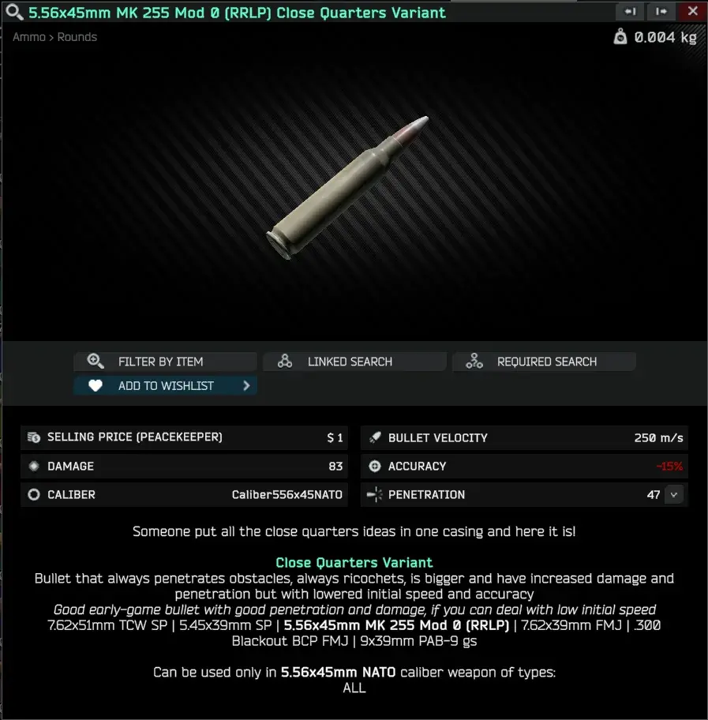
5.56x45mm Full-auto bullet variant
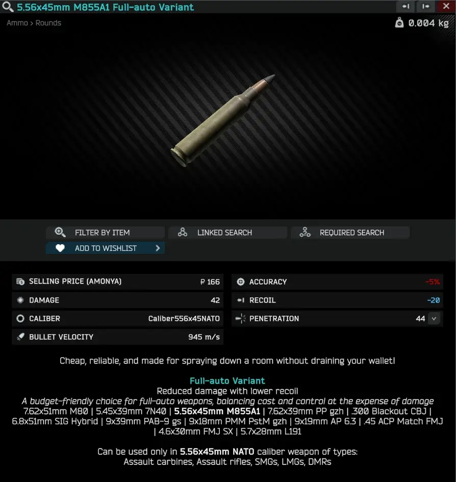
5.56x45mm Ratshot bullet variant
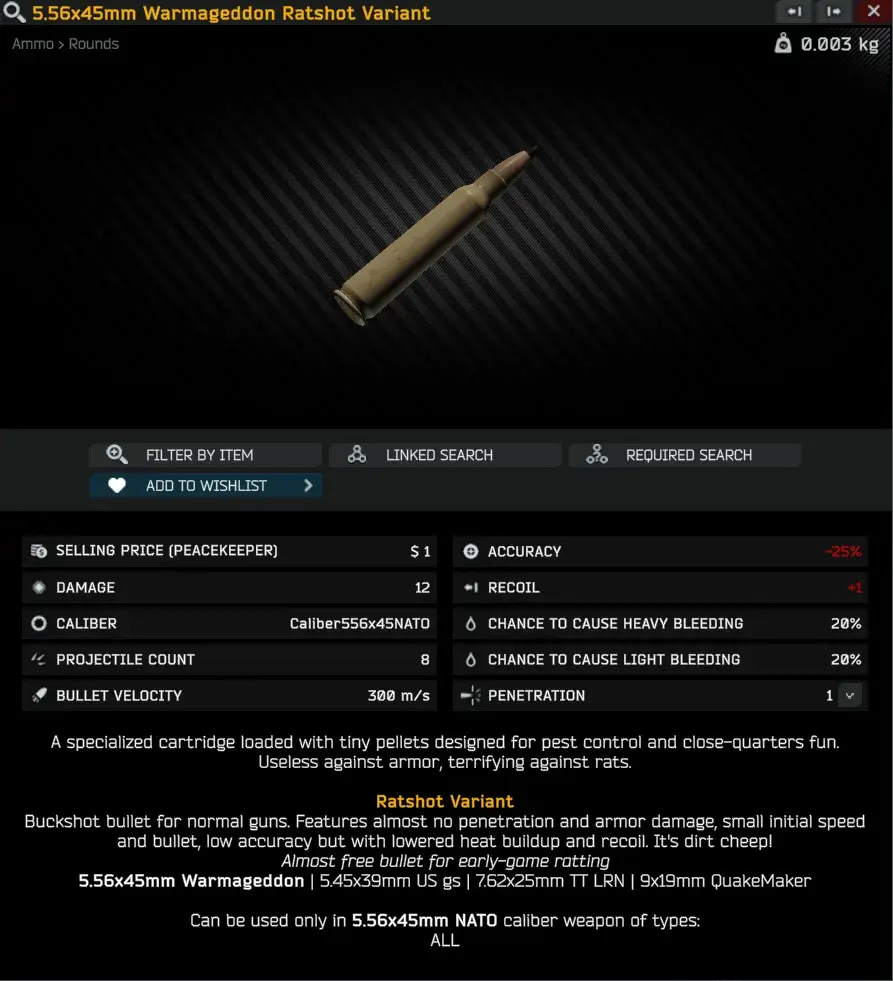
AAAAAAAAAAAAAAAAAAAAAAAAAAAAAAAAAAAAAAAAAAAAA
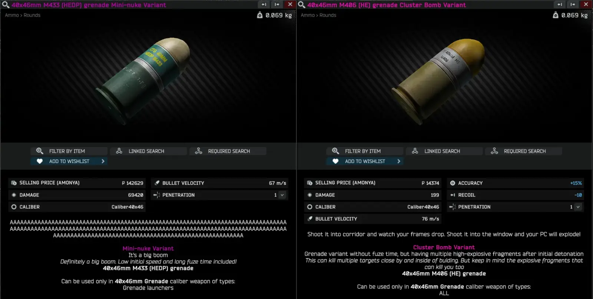
Junk for GP-Coins in LL2
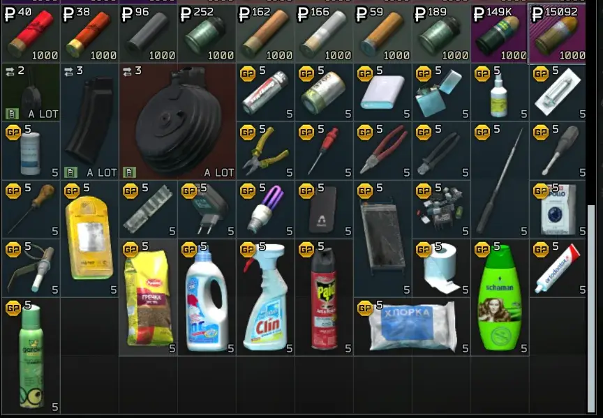
Random other quest
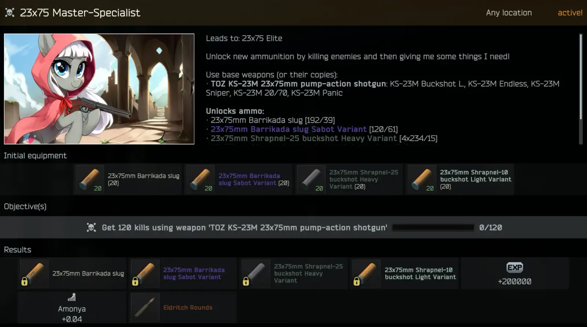
Reward for starting quest
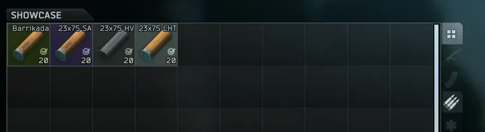
“Kill collector” quest - kill enemies using all weapons of given caliber
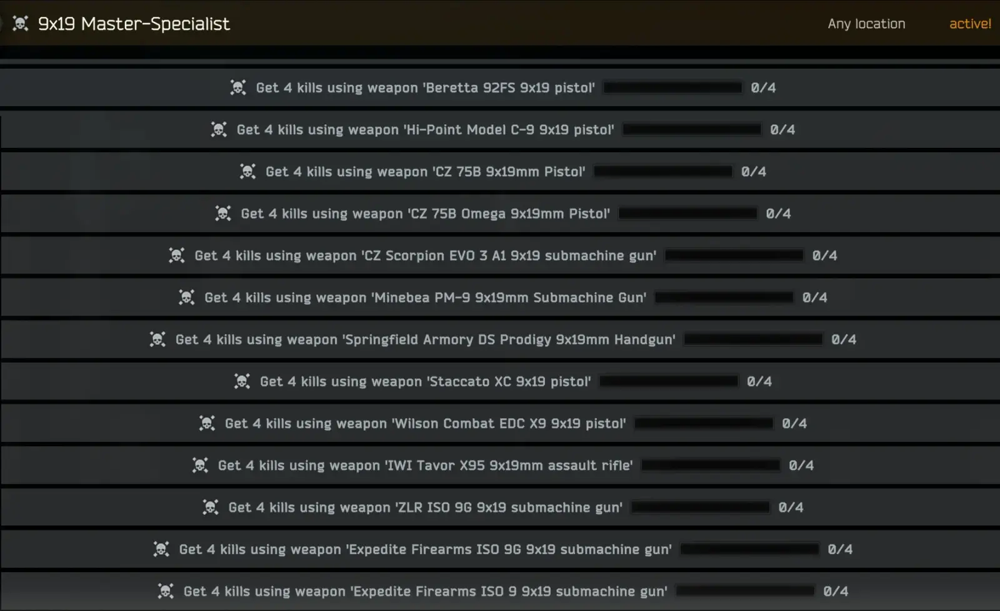
Colorfull when combined with other mods that are coloring bullet backgrounds!
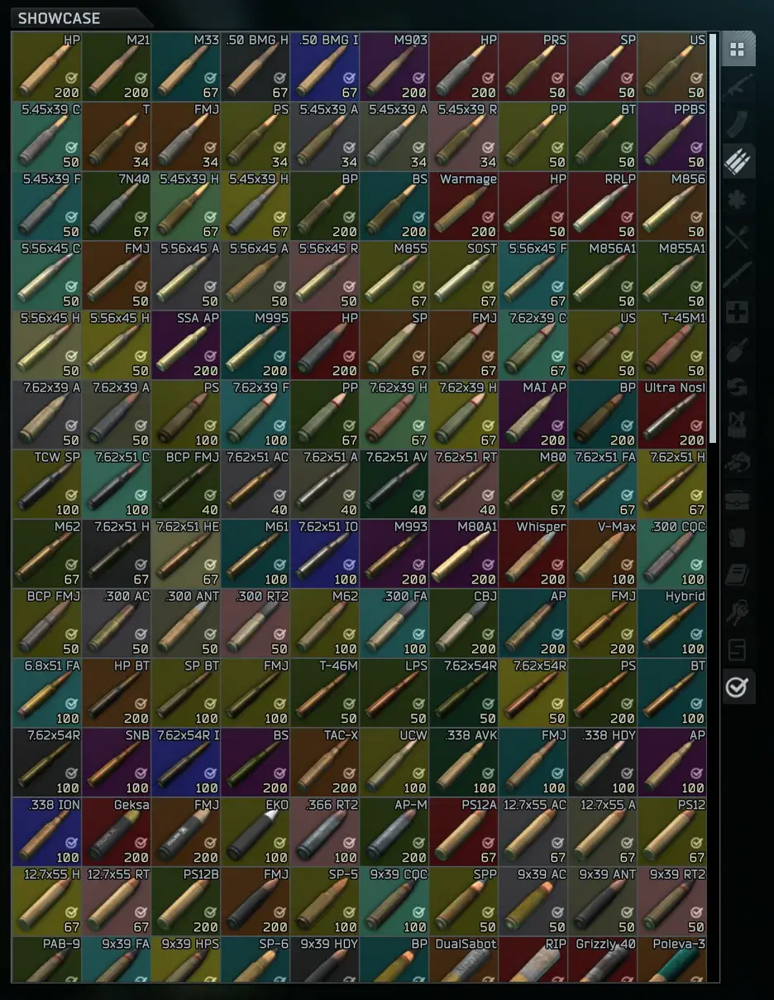
Installation
Installation is the same as for all other mods available on Forge
-
Download the Mod by clicking blue “Download Latest Version” button
-
Extract the contents of the downloaded file into the main SPT folder
Update
Install the mod again and replace all files if prompted
New features will use their default values until the config file is updated. You can update it in 2 ways:
- Copy the new entries from “defaultConfig” into “config”
- Rename your “config” file to “OLDconfig”, copy “defaultConfig”, and rename it to “config”. Then check what you changed in “OLDconfig” and apply the same changes to the new “config” file
Reinstallation
Check SPT 4.0\SPT\user\mods\Amonya\db\99_Ids for files with dates in their names (for example: “ids_2026-04-30_14-15-39.json”)
If you have any, these files correspond to additional items added in your specific installation of Amonya. Do not remove them. Save them in another location and, after reinstalling the mod (removing the Amonya folder and following the installation steps again), place them back into the same folder.
Configuration
The configuration file is located in the following path:
- SPT 4.0\SPT\user\mods\Amonya\config
In there you can find 2 to 4 files:
- “defaultConfig.json” - as the name suggests, this is the default config file. Do not change anything in it. It is used to restore a working config if your “config” file becomes unusable
- “config.json” - this is the main config file. If you do not have this file, run the server once or make a copy of “defaultConfig” and rename it to “config”
- “defaultQuestConfig.json” - this is the default config file for quests. Do not change anything in it
- “questConfig.json” - this is the quest config file. If you do not have this file, run the server once or make a copy of “defaultQuestConfig” and rename it to “questConfig”
Only changes made in “config.json” and “questConfig.json” will affect the mod
“Works well with” Compatibility: (recommended mods!)
- ColorConverterAPI: If you use this client mod, Amonya will add custom colors to variant bullet backgrounds and tracers.
- Caliber Under Ammo Name: When used together with a small change in the Amonya config, bullet variants will have very clear short names in equipment and inventory
- Definitive Weapon Variants: If this mod is installed, Amonya will add 2 additional quest trees for the 12.7x108 and 30x29 grenade calibers, as well as 4 bullet variants based on those calibers. Weapon variants combined with bullet variants can create very powerful combinations
- WTT-Content Backport: If this mod is installed, Amonya will add 2 additional quest trees for .308 Marlin Express and 9.3x64mm, as well as 6 bullet variants for those calibers
- WTT-Armory: If this mod is installed, Amonya will add 6 additional quest trees for 7.92x57mm, .300 Winchester Magnum, .338 Norma, .408 Cheyenne Tactical, 25x59mm Grenadeand .44 Remington Magnum, as well as 14 bullet variants for those calibers
- SaintDeerWeapons: If this mod is installed, Amonya will add a quest tree for 5.8x42mm, as well as 3 bullet variants for that caliber
- Danger Blicky: If this mod is installed, Amonya will add a quest tree for 20x1mm, as well as 2 bullet variants for that caliber
- Caliber Split Ammo Cases: Versions >=v2.0.2 of this mod allow bullet variants to be added to cases and have a config option to add Ammo Cases to Amonya!
Full Compatibility:
- All mods that add new weapons to vanilla calibers: Weapons that use vanilla calibers are compatible with Amonya quests and will have correct bullet variants available
- All mods that add new bullets to existing calibers: New bullets are being automatically added to quest trees
- All mods that add magazines: Bullet variants will be automatically added to them based on weapon categories
- Colored Tracers: This mod is loaded before Amonya, no changes will be made to bullet variants and bullet variants won’t have impact on bullet ratings
Partial Compatibility:
- MoreCheckmarks: Some checkmark info will me MASSIVE
Not Compatible:
- All other mods that are adding new calibers: new quests are not generated automatically
- Marlin MXLR .308 ME Lever-Action Rifle: Conflict with bullet names added by this mod: “An item with the same key has already been added. Key: 6937dbee0dd9015d14925d0d”. Please remove this mod and use WTT-Content Backport instead
If you have ANY opinion on my mod, let me know in the comments!
Positive and negative feedback is highly valuable for me and will be taken into account in further mod development!
You can report bugs and request new features or changes, just let me know on Discord! You can either send me a dm under “Szonszczyk” nickname or just write in thread in #mods-development channel in official SPT Pub discord server!
Play tested and brainstormed with Amidorak
Whole MLP community for pictures used to train AI models Quest backgrounds generated with Stable Diffusion
Version
2.1.0
New functionality - Automatic addition of modded bullets to quests
- All modded bullets can now be automatically added to known quests caliber trees
- Based on bullet rating (weights can be adjusted in config), bullets are added to the appropriate quest in tree based on several specified properties. Property weights can be configured under
BulletRatingWeightsin the config file - Can be disabled in the config
If you do not see this option, update your config. Instructions can be found in the mod description
Content Update
- Added questlines for calibers introduced by WTT-Armory
- 7.92x57mm - unlocked by completing 7.62x54R Beginner with 4 new quests and 2 bullet variants
- .300 Winchester Magnum - unlocked by completing 7.62x51 Novice with 4 new quests and 3 bullet variants
- .338 Norma - unlocked by completing .338 Beginner with 3 new quests and 2 bullet variants
- .408 Cheyenne Tactical unlockable by completing 7.62x51 Expert with 4 new quests and 3 bullet variants
- 25x59mm Grenade - unlocked by completing Introduction, but accessible in LL2 and above with 5 new quests and 2 bullet variants
- .44 Remington Magnum - unlocked by completing .357 Beginner with 6 new quests and 2 bullet variants
- Added questlines for caliber introduced by SaintDeerWeapons
- 5.8x42mm - unlocked by completing 5.56x45 Novice with 4 new quests and 3 bullet variants
- If you are using Danger Blicky mod, you can access new 20x1mm questline
- 20x1mm - unlocked by completing Introduction, but accessible in LL2 and above with 3 new quests and 2 bullet variants
- Added 20x1mm Tazer bullet to Amonya LL2
- Added Korean translation by ssal_pt and Russian translation by kokosik
If you would like your translation to be included in Amonya, contact me on Discord
Other stuff
- Changed the Lucky Shot bullet variant’s Damage modifier to -45% (from -33%) and Projectile Count to 9 (from 12)
- Reduced the USD requirement for Expert difficulty to 7,000 (from 20,000)
- Added a config option to adjust load speed of Mag of Holding items
- Added a config option to adjust trader refresh timer
- Added default config option of changing 20x1mm caliber stack to 200
- Added toggleable extended debug capabilities (disabled by default)
You can save JSON files containing Items, Quests, and Locales added by this mod, as well as Bullets and Weapons loaded by the mod (used when adding variant bullets and weapons to quests)
Fixed
- Fixed the Cluster Bomb bullet variant not functioning correctly
- Mini-nuke variant is now more powerful, cheaper and has 0.5s fuze time (down from 1s)
- Adjusted some weapon categories in quests to better match their in-game display information
- Disabling a bullet variant no longer prevents it from being generated; it now only removes it from quests and traders
- Enabled the Tazer round (it had been intended to be enabled for some time, but a config error prevented it)
- Bullet names in quest descriptions now use the correct language instead of always defaulting to English
- Added missing strings into locale files
Version
2.0.5
Content Update
- Added 40mmRU caliber to be used in variants
Added 40mm VOG-25 grenade Spiked buyable in Amonya LL2
Added 40mm VOG-25 grenade Cluster Bomb buyable in Amonya LL3
Added 40mm VOG-25 grenade Mini-nuke buyable in Amonya LL3 - Added new items to handover categories
Soap, Toothpaste and Ortodontox toothpaste to EverydayObjects category
Rechargeable battery to Electronics category
Crickent lighter to Tools category
To enable these changes you will need to remove your questConfig file from config folder - Added Polish translation
If you want to have your translation added to Amonya mod, reach out to me on Discord!
Changed
- Allowed adding variants to underbarrel grenade launchers
40x46mm Mini-nuke can now be used by underbarrel grenade launchers category items
Fixed
- Fixed a bug with “Master” difficulty missions adding categories based on copied weapons instead of base ones
- Fixed variant bullets disregarding “AmmoPrice” config setting when “EnableBulletQuests” is set to false
- Fixed localization system
- Fixed WTT-Backport quests not appearing
You can update your existing 2.0.* installation by downloading this file. It contains the same .dll file, but no images
Version
2.0.4
- Fixed incorrect caliber used in 5.56x45 and 7.62x54R questlines
- Fixed incorrect calibers being added to weapons based on their magazines if chamber exist in weapon
- Fixed error handling when trying to create variants of modded bullets from mods that are not installed
You can update your existing 2.0.* installation by downloading this file. It contains the same .dll file, but no images
Version
2.0.3
- Fixed a bug that requires currencies different than Roubles to be FiR to be handover for Amonya quests
- Added a new config option to disable FiR requirements for all items different than currencies
- Fixed incorrect GUID capitalization
You can update your existing 2.0.* installation by downloading this file. It contains the same .dll file, but no images
Version
2.0.2
You don’t need to update if you are using English language in your game client
- Fixed locales for almost all languages
Version
2.0.1
- Resolved conflict with Echoes of Tarkov - Requisitions - NG
- Added Marlin MXLR .308 ME Lever-Action Rifle to not compatible list. Please check Compatibility tab in mod description for more info
- Added new config option to enable/disable some debug information
Version
2.0.0
SPT 4.0 Release & Content Update
- Completely rewritten mod to C#
- Added new categories for quest barter
- Added new quest to 20/70 quest line
- Added native support for calibers used by Definitive Weapon Variants and WTT-Backport
- Added WTT-Backport 9.3x64mm caliber quest line
- Added WTT-Backport .308 Marlin Express caliber quest line
- Added Definitive Weapon Variants 30x29mm Grenade caliber quest line
New Bullet Variants
- Added Spiked Variant
A grenade round with no explosive damage, instead dispersing lethal 12.7x108mm BZT-44M projectiles upon detonation - Added Afterburner Variant
A high-velocity round that sacrifices raw damage for increased penetration, higher muzzle velocity and significantly higher heat buildup - Added Mini-rocket Variant, only useable with Shotguns, Revolvers and Grenade launchers
Explosive shotgun slug inspired by the 30x29mm VOG-30 grenade, with slightly reduced explosive performance - Added Lucky Shot Variant, only useable with Bolt-action rifles
A buckshot round designed for bolt-action rifles. Accuracy becomes a gamble - you might miss entirely or land multiple hits in a single shot
Balance changes
- Rebalanced barter in quests (give items after killing enemies)
- Mags of Holding have now negative weight to compensate ammo weight
- Rounds used to buy Mags of Holding have now 2 stack size. It’s 100% buff
Other Changes
- Removed barter for GPCoin
- Added non-pony mode toggle-able in config file (backgrounds will be added later)
- Added config options to increase stack of bullets of certain calibers
- Added database for exceptions of base/copy weapons
- Added fixes for all custom calibers that don’t have StaticAmmo information
- Conflict with MoreCheckmarks mod has been resolved
Version
1.0.1
This is fix for SPT 3.11
- Enabled Pro+ bullet by default - existing Amonya users can enable this by replacing “ProPlus” with “Pro+” in config.jsonc file
- Changed base bullet of Lazer .45ACP to “.45 ACP Match FMJ” - this change will remove existing bullets of this kind
- Added quest locales to ALL locales instead of only EN - this will fix broken text in non-en client languages
Dependencies
Version
1.0.0
Initial release